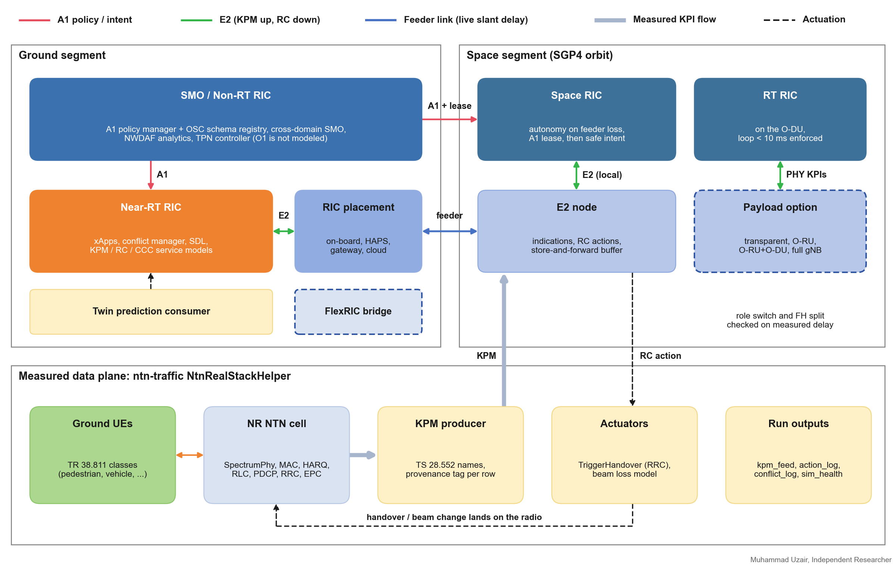
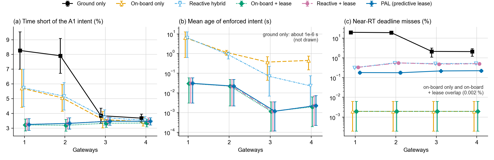
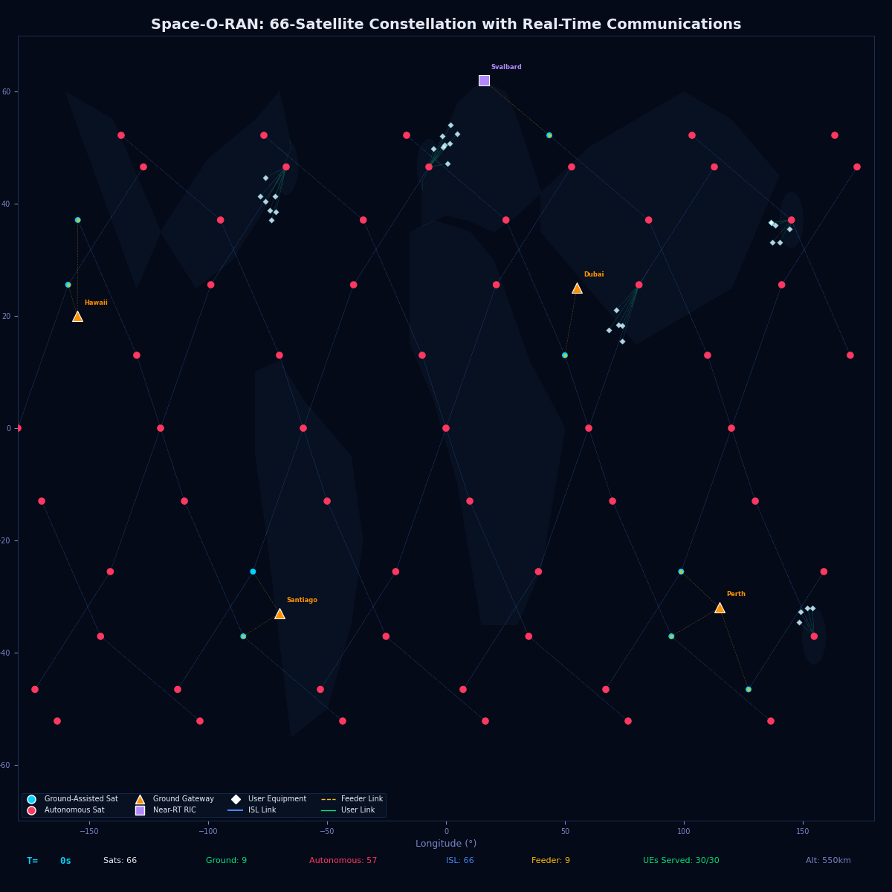
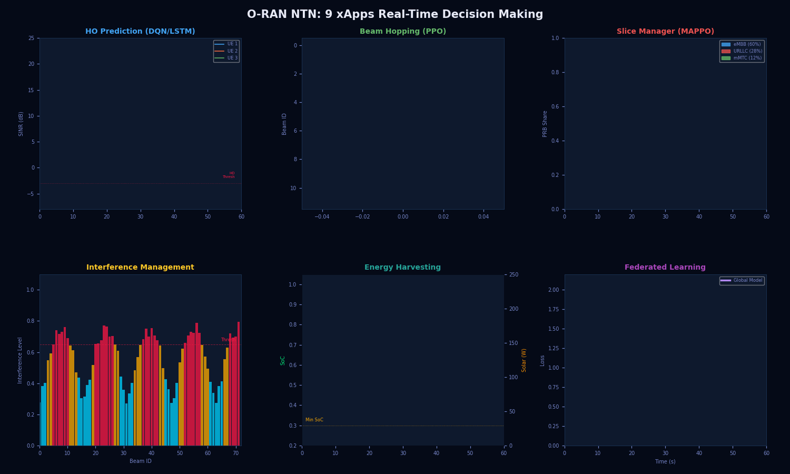

oran-ntn
Space O-RAN for ns-3: E2 and A1 control loops over a measured NR NTN radio, with the RIC placed on board, at a gateway or in the cloud


Toolkit · Docs · Install · Results · Examples
Source
This page mirrors contrib/oran-ntn/README.md. Figures are regenerated by the make_*.py scripts in contrib/oran-ntn/doc/figures/.
Why this module¶
Putting a RAN Intelligent Controller (RIC) in space is an architecture question
before it is an algorithm question. Where the RIC sits decides how stale its view
is when a decision lands, and whether the satellite can still act when its feeder
link to the ground is down. oran-ntn makes those questions measurable in ns-3.
The RIC placement is an experiment variable whose E2 latency comes from live slant
geometry, the KPIs the xApps read are measured on a real NR NTN cell, and the
helper counts how many decisions changed anything, not only how many were made.
A decision that names a cell with no radio behind it is reported as a decision,
not as a handover.
System design¶

Ground segment, space segment and the measured data plane. A1 intents (red) reach the Near-RT RIC directly and the Space RIC over the feeder with a lease. E2 (green) carries KPM up and RC actions down; on the ground path it crosses the feeder link (blue), whose delay follows the live slant range. Dashed boxes are optional or not on the in-simulation path. O1 is not modeled. Script: doc/figures/make_oran_ntn_design.py.
How a control loop runs:
NtnRealStackHelper(fromntn-traffic) stands up an NR NTN cell on an SGP4 orbit: SpectrumPhy, MAC with HARQ and AMC, RLC, PDCP, RRC and EPC. UEs move under TR 38.811 mobility classes.- Per-UE SINR and TBLER are measured on that cell and packed into E2SM-KPM
indications under TS 28.552 names. Every KPM row carries its provenance
(
phy-traceor, for scale-out cells,geometry-budget). OranNtnE2Nodesends each indication one feeder delay up to the Near-RT RIC, optionally aligned to the 100 ms RIC tick. During a feeder outage it buffers them (store and forward) and the Space RIC takes over on board.- xApps decide; the conflict manager resolves contention; the RC action travels
one feeder delay back down and reaches a registered actuator, for example
NtnRealStackHelper::TriggerHandoveror a beam loss model on the live channel. - The next KPM report shows whether the action changed the radio.
Results¶
All numbers below come from stored runs. Each figure has a script that reads the raw files, so the plot can be regenerated and checked.
Stale A1 intents, lease fallback and control placement under feeder outages¶

Example oran-ntn-feeder-mgmt, 550 km Walker-Delta shell, 1 to 4 gateways, 6 strategies, 10 seeds each, 1 h simulated per run (240 runs, one binary, sha256 prefix 3232e23199cd6002). Markers are means, bars are 95 % t-intervals over seeds; on log axes the lower whisker is clipped at 10 % of the mean. Data: paper/tnsm-2026-stale-a1-intents/runs.tar.xz (runs/main/) in the toolkit workspace; per-configuration table: doc/figures/oran_ntn_results_summary.csv; script: doc/figures/make_oran_ntn_results.py.
What the campaign shows, at one gateway unless stated (mean ± 95 % interval over 10 seeds):
| Strategy | Time short of intent | Mean age of enforced intent | Near-RT deadline misses |
|---|---|---|---|
| Ground only | 8.27 % ± 1.26 | about 0 s | 19.57 % ± 1.08 |
| On-board only (intent held without expiry) | 5.71 % ± 1.29 | 6.45 s ± 6.36 | 0.002 % |
| Reactive hybrid (heartbeat failover) | 5.74 % ± 1.26 | 6.45 s ± 6.39 | 0.32 % ± 0.02 |
| On-board + lease | 3.22 % ± 0.40 | 0.031 s ± 0.028 | 0.002 % |
| Reactive + lease | 3.26 % ± 0.39 | 0.031 s ± 0.028 | 0.33 % ± 0.03 |
| PAL (contact-plan prediction + lease) | 3.26 % ± 0.39 | 0.031 s ± 0.028 | 0.18 % ± 0.02 |
- Stale intents. A satellite that keeps enforcing an A1 intent it cannot refresh holds it for 6.45 s on average at one gateway. Giving the on-board copy a lease, after which it falls back to a safe intent, cuts that age to about 30 ms and the time short of intent from about 5.7 % to about 3.3 %. The lease does the work: on-board, reactive and predictive hosts with the same lease land within each other's intervals.
- More gateways close the gap. With 3 or 4 gateways the feeder is rarely down, and every strategy sits between 3.3 % and 3.9 %.
- Control placement. Ground-only near-RT control misses about 19 % of its deadlines with one or two gateways (the feeder delay alone breaks the budget), and still about 2 % with four. Moving near-RT control on board removes almost all misses; contact-plan prediction (PAL) roughly halves the misses of the reactive hybrid, from 0.32 % to 0.18 %.
Scope of this campaign.
oran-ntn-feeder-mgmthas no radio stack: cell demand is a stochastic session process and the slice share is a control parameter, not scheduled PRBs. Orbits (SGP4 on Walker elements), feeder visibility and the control plane are real: every E2, A1, heartbeat and lease message is a UDP packet on ns-3 point-to-point links whose delay follows the live slant range. E2AP over SCTP is not simulated. The campaign binary was built from this example plus the default-off campaign options inpaper/tnsm-2026-stale-a1-intents/ns3_patch/.
Five concurrent xApps on the full constellation scenario¶
One run of oran-ntn-full-scenario --duration=600 --numUes=20 (seed 1), stored in
papers/sim_runs/oran-ntn/run1/ (xapp_metrics.csv, ric_metrics.txt): 71 E2
nodes, 5 xApps, 0 conflicts, 0 policy violations.
| xApp | Decisions | Actions recorded | p95 decision latency |
|---|---|---|---|
| ho-predict | 464 | 464 | 0.033 ms |
| beam-hop | 2,994 | 2,994 | 0.026 ms |
| slice-manager | 6 | 18 | 0.033 ms |
| doppler-comp | 4,272 | 68,489 | 0.080 ms |
| tn-ntn-steering | 2 | 2 | 0.005 ms |
| Total | 7,738 | 71,967 |
One decision can fan out to many actions, which is why Doppler compensation dominates the action count. In this scenario the RC path records actions; it does not actuate the radio unless the scenario registers an actuator (see Honest scope). The decision latency is xApp computation only, not the end-to-end loop.
Gallery¶

oran-ntn-full-scenario through a feeder-link outage.
Classes¶
| Area | Classes | Header |
|---|---|---|
| Near-RT RIC | OranNtnNearRtRic, OranNtnE2Termination, OranNtnSdl, OranNtnConflictManager |
model/oran-ntn-near-rt-ric.h, model/oran-ntn-conflict-manager.h |
| RT tier and placement | OranNtnRtRic (loop period below 10 ms or it refuses to start), OranNtnRicPlacement (OnBoardSatellite, Haps, GroundGateway, GroundCloud; ComputeE2Delay(), BindToGeometry()) |
model/oran-ntn-rt-ric.h, model/oran-ntn-ric-placement.h |
| Space RIC | OranNtnSpaceRic (EnterAutonomousMode() on feeder loss), OranNtnSpaceRicInference, OranNtnIslHeader |
model/oran-ntn-space-ric.h |
| E2 and service models | OranNtnE2Node (feeder delay each way, store-and-forward buffer, AlignToControlLoop), canonical KPM IDs, KPM / RC / CCC / ephemeris models behind OranNtnServiceModelRegistry, E2SM-RC Style 3 |
model/oran-ntn-e2-interface.h, model/oran-ntn-kpm-canonical-ids.h, model/oran-ntn-service-model*.h |
| A1 and intent leasing | OranNtnA1PolicyManager, OranNtnA1Adapter, OSC-aligned schema registry (a1-policies/), OranNtnAuthorityLease, OranNtnContactPlan |
model/oran-ntn-a1-interface.h, model/oran-ntn-authority-lease.h, model/oran-ntn-contact-plan.h |
| Cross-domain SMO | OranNtnNwdaf, OranNtnTpnController, OranNtnCrossDomainSmo |
model/oran-ntn-cross-domain.h |
| Payload and platform | NtnFhSplitModel (Opt 2, 7.2a, 7.2b, 8; ChooseBestSplit()), NtnPlatformSpec (UAV, HAP, LEO, MEO, GEO), OranNtnRoleSwitch (RU to RU+DU to full gNB) |
model/oran-ntn-fh-split.h, model/ntn-platform-spec.h |
| xApps | OranNtnXappBase (serving cell resolved by identity) and HO Predict, Beam Hop, Slice Manager, Doppler Comp, TN-NTN Steering; advanced xApps in the same directory |
model/oran-ntn-xapp-*.h |
| AI inference | OranNtnOnnxXapp (ONNX Runtime optional, heuristic fallback), gym environments, OranNtnFederatedLearning |
model/oran-ntn-onnx-xapp.h, model/oran-ntn-gym-*.h |
| Digital-twin loop | OranNtnTwinPredictionConsumer (loads the twin's t_s,ueId,recommendedGnbId,confidence file and fires HANDOVER_TRIGGER at t_s) |
model/oran-ntn-twin-prediction-consumer.h |
| Disaggregated gNB | OranNtnSplitGnbEntity, OranNtnF1Interface, OranNtnOfhInterface |
model/oran-ntn-split-gnb.h |
| Helpers | OranNtnHelper (RICs, E2 nodes, A1, xApps, CSV writers, RegisterBeamLossModel, SetHandoverActuator), OranNtnSplitGnbHelper |
helper/ |
Quick start¶
Inside the toolkit, where the module is present and built:
./ns3 run "oran-ntn-full-scenario --duration=90 --numUes=30 --numRealCells=1"
./ns3 run "oran-ntn-ric-controlled-traffic --simSeconds=40 --xapp=1"
for p in onboard gateway cloud; do
./ns3 run "oran-ntn-ric-placement-ab --simSeconds=40 --placement=$p"
done
./ns3 run "oran-ntn-feeder-mgmt --strategy=pal --shell=550 --numGw=1 --simSeconds=3600 --run=1"
Standalone, into an existing ns-3.43 tree (most examples also need ntn-traffic,
so the toolkit tree is the easier path):
git clone -b oran-ntn-v2 https://github.com/Muhammaduazir69/oran-ntn.git contrib/oran-ntn
./ns3 configure --enable-examples --enable-tests
./ns3 build oran-ntn
With Docker, prebuilt:
docker run --rm uzairdocker69/ns3-ntn-toolkit:latest \
./ns3 run "oran-ntn-ric-placement-ab --simSeconds=40 --placement=cloud"
Examples¶
Binaries land in build/contrib/oran-ntn/examples/; run them with
./ns3 run "<name> [--args]".
| Example | What it measures | Actuates the radio |
|---|---|---|
oran-ntn-full-scenario |
66-satellite SGP4 constellation, 5 xApps, conflict resolution, Space RIC autonomy during a feeder outage | no (records decisions) |
oran-ntn-real-stack-scenario |
Near-RT RIC driven by measured mmWave PHY KPM on a real Walker pass | no |
oran-ntn-ric-controlled-traffic |
closed loop: an E2SM-RC BEAM_SWITCH lands on the live channel and SINR, TBLER and goodput recover; compare --xapp=1 with --xapp=0 |
yes |
oran-ntn-gym-handover-example |
OranNtnGymHandover on the measured radio; the action leg travels xApp, RIC, E2, RC |
yes |
oran-ntn-ric-placement-ab |
reaction time (fade onset to beam actuation) and PHY recovery time per RIC placement | yes (beam restore) |
oran-ntn-feeder-mgmt |
A1 intent leasing and control placement under intermittent feeder links; 12 strategies (see Results) | control plane only, no radio |
ntn-e2e-full-stack |
one cell feeding the RIC, the ntn-slice SLA monitor and an observability CSV |
no |
oran-ntn-cross-domain-slice |
NWDAF, SMO and TPN path switch at the latency crossover between two satellites | example code sets rates and routes |
oran-ntn-payload-options-ab |
measured one-way delay for transparent, O-RU, O-RU+O-DU and full gNB payloads | n/a |
ntn-platform-latency-validation |
round trip per platform class (UAV, HAP, LEO, MEO, GEO) against its latency band | n/a |
oran-ntn-emergency-communication |
gateway failure, role switch to an on-board gNB, emergency slice SST=5 | yes (role switch) |
oran-ntn-e2-termination |
two-process E2 setup and indications over a real SCTP association (TCP fallback); exits non-zero on failure | n/a |
Common outputs (in --outputDir): kpm_feed.csv with a provenance column,
kpm_canonical.csv, action_log.csv, conflict_log.csv, xapp_metrics.csv,
space_ric_metrics.csv, ric_metrics.txt and sim_health.csv. An empty
conflict_log.csv is correct for the shipped xApp mix, because the active xApps
act on disjoint resources.
OranNtnE2Node attributes that shape the E2 loop:
| Attribute | Default | Meaning |
|---|---|---|
FeederLinkDelay |
20 ms (4 ms from CreateSatelliteE2Nodes) |
one-way delay applied to each direction |
MaxBufferSize |
1000 | on-board store-and-forward buffer during a feeder outage |
AlignToControlLoop |
false | queue indications for the next RIC tick instead of running xApps inline |
ControlLoopPeriod |
100 ms | Near-RT RIC tick used by AlignToControlLoop |
UnixEpochOffset |
0 | offset added to timestamps for external consumers such as FlexRIC |
Tests¶
./test.py -s oran-ntn # RIC, service models, A1, Space RIC, actuator wiring, twin loop
./test.py -s oran-ntn-multi-tier-ric # RT RIC bound, placement geometry, cross-domain loop, ONNX fallback
./test.py -s oran-ntn-ws4 # payload delay ladder, FH-split feasibility, endurance, role switch
./test.py -s oran-ntn-feeder-mgmt # feeder-management strategies, leases, reconciliation
OranNtnHelperActuatorsWiredTest drives a BEAM_SWITCH and a HANDOVER_TRIGGER
through RIC, E2 termination, E2 node and RC path to the registered actuators;
OranNtnRlActionImprovesSinrTest and OranNtnTwinConsumerClosesLoopTest check
the RL action leg and the twin consumer.
Dependencies¶
- Required, in tree:
ntn-traffic(NtnRealStackHelper,NtnOranApplication,NtnOranAiFlowMonitor),mmwave,satellite,ns3-ai-ntn. Several examples also usentn-constellationandntn-cho;ntn-e2e-full-stackusesntn-slice. - Optional, detected at configure time: ONNX Runtime (
OranNtnOnnxXappinference), SQLite (OranNtnDataRepositorybackend), libsctp (FlexRIC bridge, TCP fallback when absent).
See INSTALL.md and the toolkit INSTALL.md.
Honest scope¶
- Transport. E2 indications and RC actions are delay-modeled simulator events (one feeder delay per direction), the same substitution ns-3 mainline makes for S1-AP and X2-AP. The in-simulation E2 transport is an ns-3 header with toolkit-internal type values, not ASN.1 APER over SCTP.
- ASN.1 codec.
asn1/holds a hand-written PER codec that round-trips against itself but is not bit-conformant Aligned-PER, so an asn1c peer would not decode it. The FlexRIC listener (flexric-bridge/e2-listener.cc) echoes frame types and does not decode payloads; neither is on the in-simulation control path. - Open loop by default. The default RC handler records the decision and
returns success. A scenario closes the loop by registering an actuator
(
SetRcActionCallback,RegisterBeamLossModel,SetHandoverActuator); without one the generic path logsactuated=false. - AI. No trained
.onnxmodel ships. Without ONNX Runtime or a model,OranNtnOnnxXappruns its registered heuristic;IsModelLoaded()says which. - Experimental classes.
OranNtnGymBeamHop,OranNtnGymPredictive,OranNtnGymSlice,OranNtnGymSteering, the THz xApps andOranNtnMmWaveBeamformingare not yet exercised by any example or test.OranNtnHelpermethodsSetupMmWaveNtnStack,SetupDualConnectivity,SetupAiIntegration,EnablePhyKpmExtraction,CreateAllAdvancedXapps,SetupIslNetwork,SetupFederatedLearningandGetSatBridgeare declared but not implemented; calling them is a link error. - O1 is not modeled.
Standards¶
O-RAN Alliance E2AP, E2SM-KPM, E2SM-RC (including Style 3), E2SM-CCC, A1 policy, WG2 Non-RT RIC and WG3 Near-RT RIC architecture and conflict mitigation, WG4 fronthaul split options. 3GPP TS 28.552, TS 38.331 (reconfiguration with sync), TS 38.413, TS 38.423, TR 38.821 (transparent and regenerative payloads), TS 38.214. ETSI EN 302 307-1 (DVB-S2 MODCOD).
Citation¶
If this module contributes to a publication, please cite the toolkit article:
M. Uzair et al., "ns3-ntn-toolkit: An integrated ns-3 platform for 6G non-terrestrial networks," IEEE Open Journal of the Communications Society, 2026, doi: 10.1109/OJCOMS.2026.3745010.
@article{uzair2026ns3ntntoolkit,
author = {Uzair, Muhammad and others},
title = {ns3-ntn-toolkit: An Integrated ns-3 Platform for 6G Non-Terrestrial Networks},
journal = {IEEE Open Journal of the Communications Society},
year = {2026},
doi = {10.1109/OJCOMS.2026.3745010}
}
License¶
GPL-2.0-only, matching ns-3.
Contact¶
Muhammad Uzair, Independent Researcher. Email muhammaduzairr69@gmail.com, ORCID 0009-0002-4104-2680. Part of the ns3-ntn-toolkit, mirrored on GitLab.